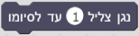

פקודות הרובוט
אירוע זה יופעל כאשר חיישן דיגיטלי מסוג מגע/מגנטי/אור/אינפרה-רד המחובר בבקר לכניסת קלט I1-I8 משנה את מצבו לנפתח (מ-1 ל-0) או לנסגר (מ-0 ל-1)
אירוע זה יופעל כאשר המספר הנוכחי השמור בקלט המונה C1-C4 יהיה גבוה/נמוך יותר מאשר הערך המוזן
אירוע זה יופעל כאשר הערך של חיישן אנלוגי מסוג צבע/מרחק/טמפרטורה/אור המחובר לכניסת קלט I1-I8 הינו גבוה/נמוך יותר מאשר הערך המוזן
אחזר את ערכו של קלט המונה C1-C4
אחזר את ערכו של חיישן אנלוגי מסוג צבע/מרחק/טמפרטורה/אור המחובר לכניסת קלט I1-I8
בדוק האם ערכו של חיישן דיגטלי מסוג מגע/מגנטיות/אור/אינפרה-רד המחובר לכניסת קלט I1-I8 הינו 1. יוחזר ערך בוליאני (0 או 1)
התחל לנגן את קובץ הצליל 1-29 השמור בבקר

התחל לנגן את קובץ הצליל 1-29 השמור בבקר, והמתן עד לסיומו לפני המשך ביצוע שאר הפקודות
הגדר ערך עוצמת הנורה המחוברת ליציאת פלט O1-O8
יש להגדיר ערך עוצמת אור בין 0-8. הגדרת עוצמת אור ל-0 תכבה את הנורה
אפס את ערכו של קלט המונה C1-C4
הגדר את ערך המהירות של המנוע המחובר ליציאת פלט M1-M4 לערך שבין 0-8
יש להגדיר ערך מהירות בין 0-8. הגדרת מהירות מנוע ל-0 תעצור אותו
הגדר את ערכי כיוון הסיבוב ומהירותו של המנוע המחובר ליציאת פלט M1-M4
יש להגדיר ערך מהירות בין 0-8. הגדרת מהירות מנוע ל-0 תעצור אותו
הגדר את הכיוון של סיבוב המנוע המחובר ליציאת פלט M1-M4
הגדר את ערכי כיוון הסיבוב ומהירותו של המנוע המחובר ליציאת פלט M1-M4, ואת המרחק (מספר הצעדים) אותו יש לעבור
יש להגדיר ערך מהירות בין 0-8. הגדרת מהירות מנוע ל-0 תעצור אותו
בדיקת המרחק מתבצעת מול ערך כניסת המונה C1-C4 המחובר לחיישן האינקודר של המנוע (בהתאמה)
הדרך היחידה לשנות את המהירות בזמן הנסיעה למרחק שנקבע היא להשתמש בפקודת עצור מנוע לפני הגדרה מחודשת של המהירות
הפקודה תעבוד רק אם חיישן האינקודר של המנוע מחובר לכניסת המונה המתאימה בבקר: C1 עבור מנוע ב-M1 וכן הלאה
הגדר את ערכי כיוון הסיבוב ומהירותם של שני מנועים המחוברים ליציאות פלט M1-M4 לשם ביצוע הנעה סינכרונית של שני המנועים
יש להגדיר ערך מהירות בין 0-8. הגדרת מהירות מנוע ל-0 תעצור אותו
לא ניתן לשנות ערכי מהירות או כיוון בעבור מנוע בודד בזמן נסיעה סינכרונית, ראשית חובה לעצור את המנועים
הגדר את ערכי כיוון הסיבוב ומהירותם של שני מנועים המחוברים ליציאות פלט M1-M4 לשם ביצוע הנעה סינכרונית של שני המנועים, והגדר את המרחק אותו יש לעבור
יש להגדיר ערך מהירות בין 0-8. הגדרת מהירות מנוע ל-0 תעצור אותו
בדיקת המרחק מתבצעת מול ערך כניסת המונים C1-C4 המחוברים לחיישני האינקודרים של המנועים (בהתאמה)
לא ניתן לשנות ערכי מהירות או כיוון נסיעה בעבור מנוע בודד בזמן נסיעה סינכרונית, או את מרחק הנסיעה שנקבע. ראשית חובה לעצור את המנועים
הפקודה תעבוד רק אם חיישני האינקודרים של המנועים מחוברים לכניסות המונים המתאימים בבקר: C1 עבור מנוע ב-M1 וכן הלאה
עצור מנוע המחובר ליציאת פלט M1-M4
הגדר את סוג הטכנולוגיה בה פועל החיישן המחובר לכניסת הפלט I1-I8
חובה להגדיר בתסריט את סוג החיישן על מנת שהסביבה תדע כיצד יש לעבוד איתו ויתקבלו ממנו ערכים מתאימים
מתח דיגיטלי - חיישן מזהה מסלול (IR)
התנגדות דיגיטלית - חיישן מגע (מתג), חיישן אור (מחסום אור), חיישן מגנטיות
מתח אנלוגי - חיישן צבע
התנגדות אנלוגית - חיישן טמפרטורה, חיישן אור
אולטרהסוניק - חיישן מרחק
אפס את הבקר - כל ערכי כניסות הקלט ויציאות הפלט יאותחלו
מומלץ לא להשתמש בפקודה באמצע ריצת התכנית משום שזמן הביצוע של התהליך עלול לחפוף לפקודות ההמשך שאחריו ולשבשן